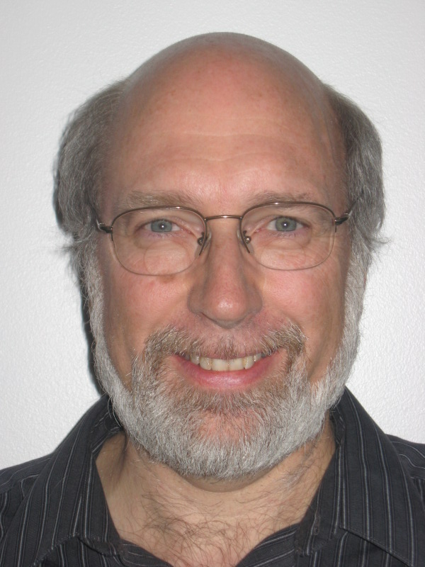
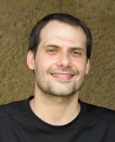
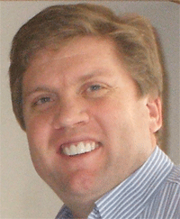
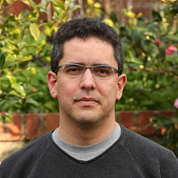

Perry Greenfield

Perry Greenfield received a Ph.D. in Physics from M.I.T. His thesis was based on Very Large Array radio observations of the first discovered gravitational lens. After a short stint in communications engineering at Bell Labs, he ended up at the Space Telescope Science Institute, where he has worked for the last 26 years. He initially was responsible for calibrating the Faint Object Camera for the Hubble Space Telescope, but for the last 16 years he has been leading the Science Software Branch. He has pioneered the use of Python in astronomy, and his group been heavily involved in Python for the last 12 years. They have developed PyRAF, numarray (the precursor to current numpy capabilities), PyFITS, and been heavily involved in the development and support of matplotlib. His group is now heavily involved in developing the science software to support the next large space telescope under construction, the James Webb Space Telescope.
John Hunter
John D. Hunter is the original author and main developr of matplotlib.
Jarrod Millman

Jarrod Millman is on the SciPy steering committee and a contributor to both the NumPy and SciPy projects. While director of computing for UC Berkeley's Neuroscience Institute, he helped found the Neuroimaging in Python (NIPY) project. Currently, he is a software developer at Berkeley's Brain Imaging Center.
Travis Oliphant

Dr. Oliphant has a Ph.D. in Biomedical Engineering from the Mayo Clinic, and M.S. and B.S. degrees in Electrical Engineering (and Math) from Brigham Young University. Travis has worked extensively with Python for numerical and scientific programming since 1997, and was the primary developer of the NumPy package and the author of the definitive Guide to NumPy. He is also the primary founding author of the SciPy package. During his academic career, he has worked in the fields of satellite remote sensing, Magnetic Resonance Imaging (MRI), Ultrasound, elastography, and general inverse problems. He was an Assistant Professor of Electrical and Computer Engineering at Brigham Young University from 2001 to 2007 where he taught courses in probability theory, electromagnetics, inverse problems, and signal processing. In addition, he directed the BYU Biomedical Imaging Lab, and performed research on scanning impedance imaging. He has done consulting work since 1997 in laser scattering off of semiconductors, sparse matrix calculations for search engines, and mesh transformations for fluid dynamics. Dr. Oliphant served as President of Enthought from 2007 until 2011, where he oversaw company growth from 15 employees to 50 employees (including revenue growth from $2.25 million/year to $8.75 million/year) and the establishment of additional satellite offices in New York City, Belgium, Cambridge UK, and Mumbai, India. During this time, he worked with Fortune 50 companies such as Shell, J.P. Morgan, and Proctor and Gamble in all aspects of the contractual relationship -‐-‐ from contracts to training to code architecture and code development. He also served on the Board of Directors for Enthought from 2008 until 2011, and during that time, formed strong connections with J.P. Morgan technical leadership staff and other industry leaders.
Fernando Perez

Fernando Perez is a research scientist at the Helen Wills Neuroscience Institute at U.C. Berkeley. His work involves the development and implementation of new algorithms and tools for neuroimaging, with a special interest in functional MRI. He is also actively involved with the development of new tools for high-level scientific computing, mostly using the Python language. He is active in creating better tools for scientific computing through working on IPython, the development of neuroimaging tools such as nipy (and especially its nitime component), and contributions to various projects affiliated with the scipy stack.